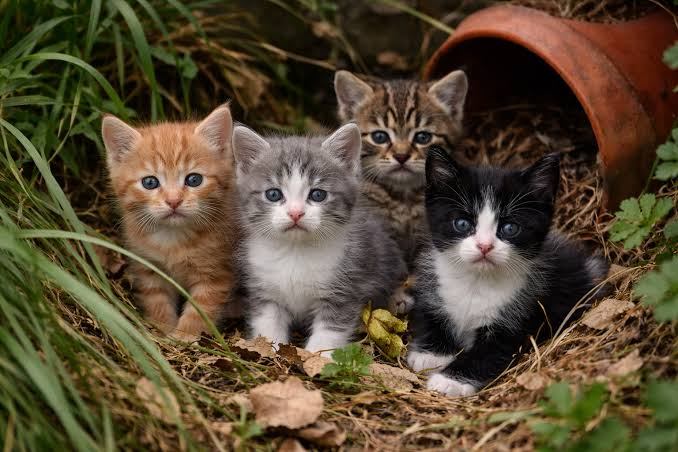

Prepare your home
Set up a quiet space with age-appropriate food, water, bedding, and a litter box. Ask the rescue about the kitten's care needs.
A little website with a big heart
Helping kittens find loving forever homes.
Give a kitten a chance
Many kittens in the Philippines and around the world need safe homes. Fostering provides temporary care while adoption gives a cat a permanent family.

If you are not ready for a permanent commitment, ask a local rescue about fostering.
Set up a quiet space with age-appropriate food, water, bedding, and a litter box. Ask the rescue about the kitten's care needs.
Contact a local shelter or rescue, meet available cats, and ask about its application process and veterinary care.
Use this sample form to explore your interest in fostering or adopting. Required fields are marked with an asterisk (*).
Learn more from Kitten Lady's fostering guide, or contact a local animal rescue.